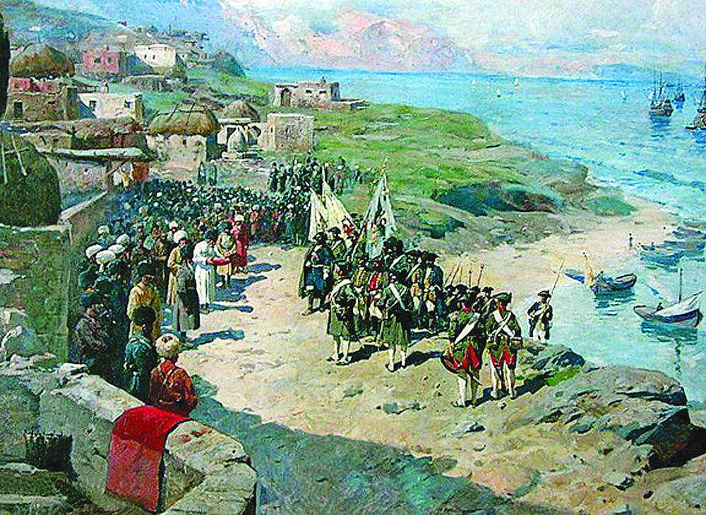
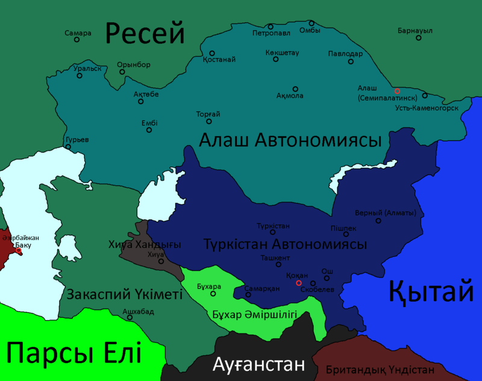

Қазақстанды Ресейдің отарлауы — 1731 жылы Кіші Жүз ханы Әбілқайырдың Ресейге қосылуынан басталды (қ. Әбілқайыр). Бұл процесс 130 жылдан аса уақытқа созылып, 19 ғасырдың 60 жылдарының ортасына қарай толық жүзеге асырылды. 1731 – 1860 жылдары Қазақстан Ресейге, көбіне сөз жүзінде ғана бағынып, іс жүзінде ру, тайпа билеушілері дербес саясат жүргізді. Патша өкіметі халық көтерілістерін аяусыз басып отырғанымен, елдің ішкі істеріне (сот жүйесіне, ру аралық мәселелерге) араласпады. Ел ішіндегі беделді адамдарға, ру басыларына жалақы тағайындап, әр түрлі атақтар беріп, екінші жағынан әкімшілік реформалар жасап, көнбегендерін жазалау арқылы өз билігін күшейтті. Мысалы, 1822 жылы Орта жүзде, 1824 жылы Кіші жүзде хандық басқару жойылды, қарсы шыққандар күшпен талқандалды (Кенесары Қасымұлы бастаған қазақ халқының ұлт-азаттық қозғалысы). 19 ғасырдың ортасына қарай Батыс, Солтүстік-шығыс, Орталық Қазақстан Ресейге толық бағынды. Оңтүстік, Оңтүстік-шығыс Қазақстан Қоқан, Хиуа хандықтарына қарады. Олар жергілікті қазақтарға салықты үсті-үстіне көбейтті. Көтеріліске шыққан халық Ресей өкіметінен көмек сұрады. Бұған қоса осы кезде Орталық Азияны отарлау жөнінде Ресей мен Ұлыбритания елдері арасында бәсеке күшейе бастады. Үндістан арқылы Ауғанстан мен Иранға орныққан ағылшындар Қоқан, Бұхар, Хиуа хандықтарын Ресейге айдап салып, оларға өз ықпалын жүргізуге тырысты. Қоқан, Хиуа хандықтарының езгісіне қарсы көтеріліске шыққан қазақтарға көмек беруді желеу етіп Ресей өкіметі оңтүстік бағытта ел ішіне ене түсті. 1854 жылы Верный (Алматы) бекінісі салынды. 1862 – 64 жылдары орыс әскерлері Әулиеата, Шымкент, Түркістан қалаларын басып алды. Оңтүстік Қазақстанды бағындырғаннан кейін Қазақстанды Ресейдің оарлауы толық іске асты. 1867 – 68 жылғы Ресей үкіметінің “Уақытша Ережесі” бойынша әкімшілік және сот жүйелері толығымен Ресей өкіметінің қолына көшіп, қазақ жері облыстарға бөлінді.

Алаш автономиясы— Трансқұрлықты қазақ республикасы болған. Оның аумағының көбісі Орта Азияда болып, бір бөлігі Шығыс Еуропада орналасқан. Бұл Ресей Республикасының, одан кейін Кеңестік Ресейдің бөлігі болған ел. 1917 жылда Алаш партиясының қазақ зиялыларымен құрылып, 1920 жылда Кеңес үкіметі басқарып отырған партияның жұмысына тыйым салғанда таратылған. Автономияның мақсаты - Ресейден тәуелсіздік алып, ұлтшылды-демократиялық мемлекетті құру. Ел солтүстігінен және батысынан Ресей аумақтарымен, оңтүстігінен Түркістан Автономиясымен, ал шығыстан Қытаймен шектеседі.
Түркістан Автономиясы немесе Қоқан автономиясы — Түркістан өлкесі халықтарының өзін-өзі басқаруын қамтамасыз ету мақсатында 1917 жылы 28 қарашада Ресей мемлекеті құрамында құрылған автономиялы мемлекет. Оның өмірге келуіне кеңестік биліктің Түркістан халықтарының өзін-өзі басқару құқығын мойындамауы түрткі болды. 1917 жылы Қазан төңкерісі жеңген соң, 22 қараша күні Ташкентте өз жұмысын аяқтаған 3-Түркістан өлкелік кеңестер съезі өлкеде кеңес билігінің орнағанын, соған байланысты Түркістан Халық Комиссарлары Кеңесінің құрылғанын, өлкедегі биліктің ендігі уақытта соның қолына өтетіндігін мәлімдейді. 14 мүшесі бар бұл үкіметтің құрамында жергілікті мұсылман халықтарының бірде-бір өкілі жоқ еді. Бұл кеңестік биліктің отаршылдық сипатын танытқан оқиға болатын. Бұған жауап ретінде қүрамында Мұстафа Шоқай, Махмұд Бехбудий, т.б. бар "Түркістан өлкесі мұсылмандар кеңесі" 26 қараша күні Қоқан қаласында 4-Түркістан өлкелік төтенше мұсылмандар съезін шақырды. Үш күнге созылған съезд 28 қараша күні Түркістан өлкесін Түркістан автономиясы деп жариялап, Түркістан Құрылтайын шақырғанға дейін саяси биліктің Түркістан Уақытша Кеңесі мен Түркістан халық билігіне өтетіндігі жөнінде қаулы қабылдады. Түркістан Уақытша Кеңесі құрамына барлығы 54 адам енді, оның 32-сі Түркістаннан Бүкілресейлік Құрылтай жиналысына сайланған депутаттар еді. Бұлардың арасында негізгі тұрғындары қазақтардан тұра¬тын Сырдария мен Жетісу облыстарынан 11 өкіл бар болатын. Кеңес құрамында, сондай-ақ мұсылмандар съезі сайлаған өкілдермен бірге, каланың өзін-өзі басқару ұйымдары съезінің 4 өкілі, түрлі өлкелік "еуропалық" ұйымдардың 13 өкілі бар болатын. Түркістан Уақытша Кеңесі 12 орыннан тұрған Түркістан автономиясының Уакытша үкіметін бекітті. Съезд Түркістан өлкесіндегі барлық халықтардың құқығын сыйлап, қорғайтындығын мәлімдеп, өлкенің барлық мұсылман, орыс, т.б. тұрғындарын Түркістан автономиясы төңірегіне топтасуға шақырды. Сонымен, 1917 жылы қарашада Түркістанда қос билік орнап, оның алғашқысы кеңестік негізде құрылып, ең алдымен ресейлік қоныс аударушылардың мүддесін көздеп, жағдайын нығайта түсуге қызмет ететіндігін білдірсе, соңғысы отарлық езгіге қарсы, діни және ұлттық негізде құрылып, жергілікті халықтардың өзін-өзі бас¬қару құқығын баянды ету басты мақсаты екендігін жариялады. Түркістан Уақытша үкіметінің төрағасы және Ӏшкі істер министрі болып Мұхамеджан Тынышпаев, Ӏшкі істер министрінің орынбасары болып заңгер Ә.Оразаев бекітілді. Уақытша үкіметтің Сыртқы істер министрі қызметіне Мұстафа Шоқай тағайындалды. Көп ұзамай Түркістан автономиясы үкіметінің төрағасы Мұстафа Шоқай болды. Түркістан автономиясының құрылуын Түркістан өлкесінің жергілікті халықтары зор қуанышпен карсы алып, оған қолдаушьшық танытуға даяр екендіктерін білдірді. 1918 жылы қаңтарда Түркістан қаласында өткен Сырдария қазақтарының съезі Сырдария облысы Алаш автономиясы жарияланғанға дейін Түркістан автономиясы құрамында болатындығын білдірді. Халық зор үміт артқан Түркістан автономиясын 1918 жылы 2 ақпанда Кеңес үкіметі қарулы күшпен таратып, оның бірнеше мүшелерін тұтқынға алды.
Қазақ Кеңестік Социалистік Республикасы — бұрынғы КСРО құрамында болған одақтас республикалардың бірі; ол 1920 ж. 26 тамызда құрылды және алғашқы кезде Қырғыз АКСР-і деп аталып, РКФСР құрамына кірді, 1936 ж. 5 желтоқсанда одақтас республикаға айналды. КСРО-ның Азиялық бөлігінің оңтүстік-батысында орналасты, солтүстігінде РКФСР-мен, оңтүстігінде Түрікмен КСР-мен, Өзбек КСР-мен және Қырғыз КСР-мен, шығысында Қытаймен шектесті, батысында Каспий теңізі. Қазақ КСР-ы — жер көлемі жағынан РКФСР-ден кейінгі екінші, халқының саны жағынан РКФСР мен Украинадан кейінгі үшінші одақтас республика болды. Жері 2724,9 мың км². Астанасы — Алматы қаласы. Әкімшілік жағынан 19 облысқа, 210 ауданға бөлінді, 82 қаласы болды.